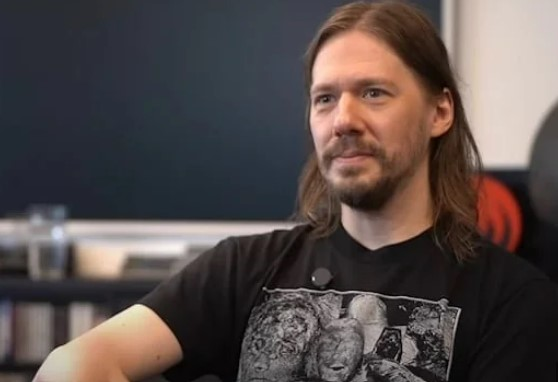

Tobias Forge nasceu em 1981, na Suécia. Desde muito jovem, ele foi imerso no mundo do rock e do metal, influenciado pelo seu irmão mais velho que lhe apresentava bandas como Kiss e Alice Cooper. Antes de criar o Ghost, Tobias passou por várias bandas de estilos diferentes, como Repugnant (Death Metal) e Subvision (Rock Alternativo). Foi em 2006 que ele escreveu as primeiras músicas que dariam origem ao Ghost, projetando uma banda onde o visual teatral e o anonimato seriam os protagonistas.
Tobias não queria ser o centro das atenções. A ideia original era ser apenas o guitarrista, mas como não encontrou ninguém para cantar com a sonoridade específica que desejava, ele assumiu os vocais sob a identidade de Papa Emeritus. Por anos, a banda manteve o mistério: um Papa satânico liderando um grupo de "Ghouls" sem nome e sem rosto.
A identidade de Tobias Forge era o segredo mais bem guardado do metal, até que em 2017 o mistério chegou ao fim. O motivo não foi uma escolha artística, mas sim um processo judicial. Quatro ex-integrantes (Nameless Ghouls) processaram Tobias por questões financeiras e direitos autorais. Como o processo exigia nomes reais, o segredo se tornou público. Pouco tempo depois, o próprio Tobias confirmou sua identidade oficialmente em um programa de rádio sueco chamado Sommar i P1, onde terminou o depoimento dizendo: "Meu nome é Tobias Forge e eu sou o homem por trás da máscara no Ghost."